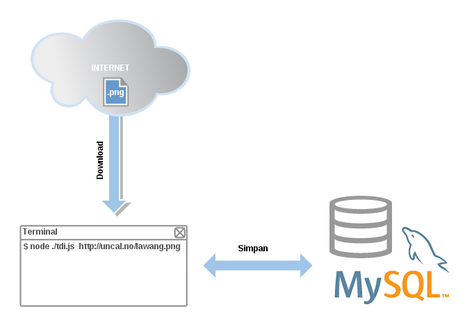

ToDataURI
Aplikasi ini adalah aplikasi Node.js CLI yang mengubah gambar png ke format data URI dan kemudian menyimpan data tersebut ke database MySQL. Proses ini bisa digambarkan seperti gambar alur dibawah ini.

Data URI
Bagi yang belum tahu Data URI adalah salah satu cara untuk meng-embed data secara inline alih-alih harus mengambil data tersebut dari resource luar. Data yang akan diubah ke Data URI disini bisa berupa image, file csv dll. Untuk aplikasi ini hanya dibatasi untuk gambar berformat png.
Format Data URI adalah seperti berikut ini
data:[<MIME-type>][;charset=<encoding>][;base64],<data>
Umumnya untuk gambar jenis encoding yang dipakai adalah base64. Sebagai contohnya lihat format gambar png yang telah dirubah ke Data URI berikut ini

Cukup panjang memang kalo di jadikan ke format Data URI. Coba kopi contoh data uri diatas dan paste ke browser url dan jangan lupa tekan enter.